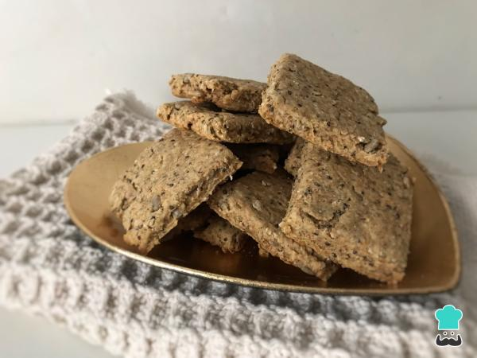
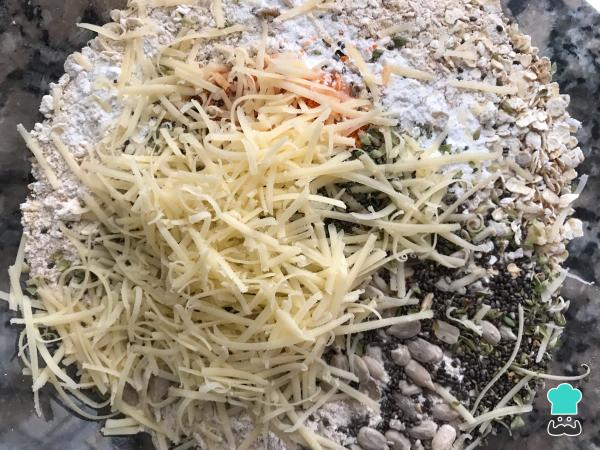
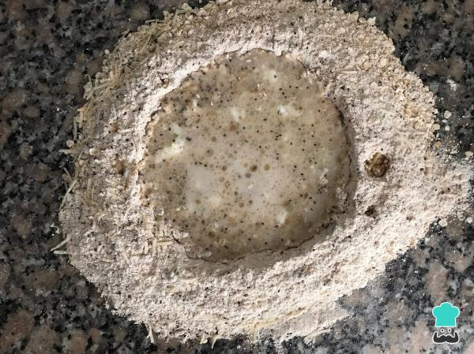
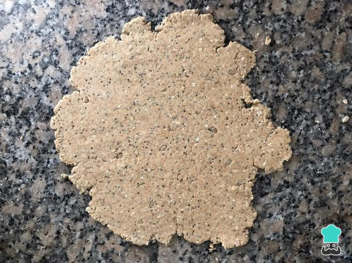
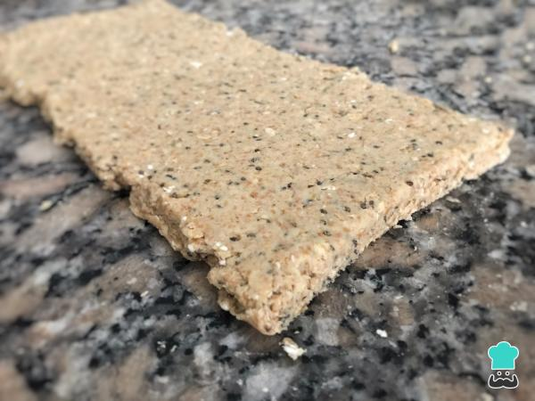
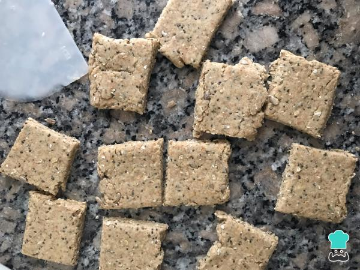
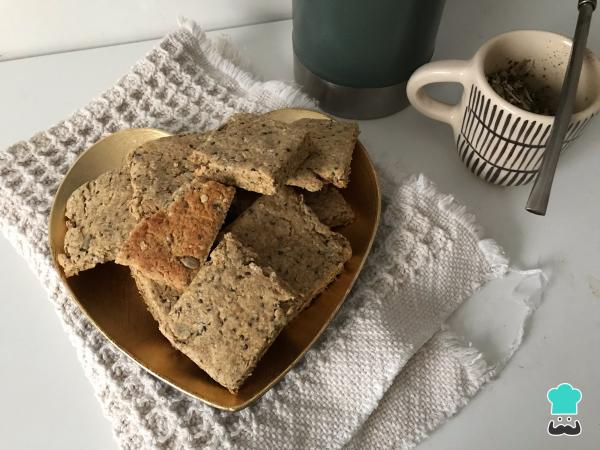

Bizcochitos de Avena

Los bizcochitos son un clásico de las panaderías argentinas, así como los cuernitos. Pero, a pesar de ser deliciosos, tienen altos valores de grasas y están hechos con harinas refinadas, esto los convierte en una opción no muy saludable, tampoco apta para diabéticos, por ejemplo. Sin embargo, en esta oportunidad junto a RecetasGratis queremos enseñarte a realizar unos bizcochitos de avena saludables para que puedas disfrutarlos a diario sin preocuparte por tu salud. De hecho, más bien estarás cuidándola. Además, al final de la receta encontrarás la información nutricional para aprender un poco más sobre esta receta.
Ingredientes
- 50 gramos de harina de avena
- 0 gramos de copos de avena
- 60 gramos de harina integral
- 30 gramos de harina 000
- 18 gramos de polvo de hornear
- 1 pizca de sal
- 1 cucharadita de orégano
- 1 cucharada sopera de queso rallado
- ½ cucharadita de cúrcuma
- 1 pizca de pimienta negra
- 75 centímetros cúbicos de agua
- 1 cucharada sopera de aceite
- 1 cucharada sopera de queso crema (opcional)
INSTRUCCIONES
- Para empezar con la receta de bizcochitos de avena, primero mezcla los ingredientes secos en un recipiente amplio. Te recomendamos condimentos como el orégano, la cúrcuma, la pimienta y el queso rallado, pero puedes utilizar los que a ti más te gusten, como por ejemplo: romero, pimentón, paprika o albahaca disecada. Cuando los hayas integrado, vuélcalos sobre la mesada limpia y haz un hueco en el centro.

- A continuación, vuelca en el centro los ingredientes líquidos, es decir, el queso crema, el aceite y el agua. Intégralos para formar una masa.

- Una vez tengas tu bollo listo, estíralo con ayuda de un palote. Haz que tu masa tenga aproximadamente 1 centímetro de alto.

- Dobla la masa dos veces hacia el centro, como si cerraras un folleto y estírala nuevamente, esta vez unos 2 centímetros de alto aproximadamente. Incluso puedes recortar los bordes para que queden más prolijos, unirlos y volver a estirar siguiendo los pasos mencionados. ¿Qué te están pareciendo estos bizcochos de avena sin yogur?

- Por último, corta tus bizcochitos del tamaño y forma que desees, haciendo cortes firmes sin arrastrar la masa. En este caso, los hemos cortado de forma cuadrada o rectangular, pero puedes hacerlos redondos en forma de corazón, estrella o triángulos.

- Dispón tus bizcochos de avena sin leche sobre una placa para horno engrasada y cocínalos en el horno a 200 ºC por 15 minutos. ¡Listo! Prepara un delicioso mate para acompañar estos pasteles con harina de avena. Cuéntanos qué te pareció esta receta y comparte una foto del resultado si la pruebas.

Volver a la pagina principal